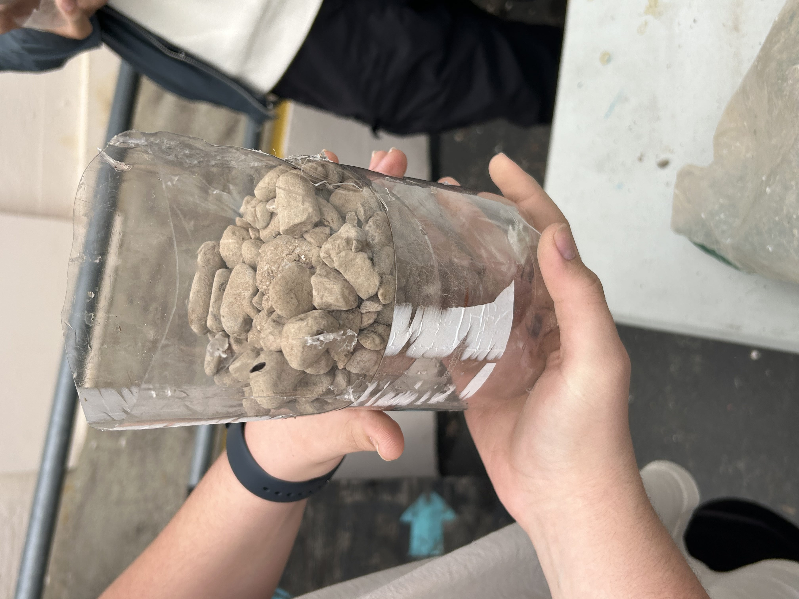
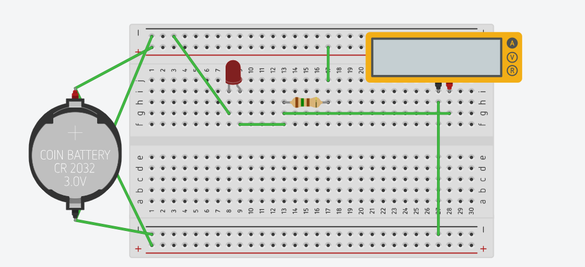
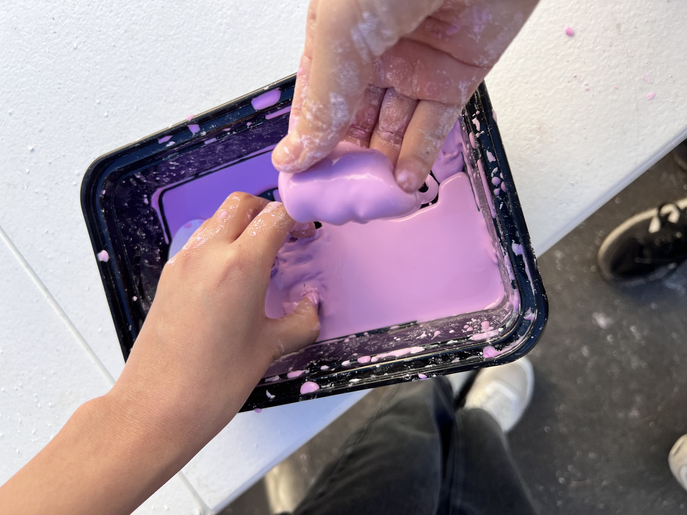

Sally Kim

Semester 2
8/25/23 - I joined this class late, on Tuesday. I was also absent that day, so my first day was Wednesday. I signed into AWS Academy and learned how to get to Cloud9. On Thursday, I did the marble activity and, despite my team's efforts, we did not get the marble in the cup once. The activity really tested my patience.
My Favorite Recipe

9/1/23 - This week I learned how to use Tinkercad. My group and I began brainstorming for our Rube Goldberg project. We sketched ideas on paper. On Challenge Day, we had a competition making home appliances on Tinkercad. I made a washing machine.
9/8/23 - This week went okay. I had a lot of work from some of my classes. I learned better how to use Tinkercad and was able to use it comfortably afterwards. My group (Emma) was very ambitious with our project and decided to use all six of the machines. I think the most challenging part will be the screw.

9/22/23 - Last week, my team worked on our Rube Goldberg machine:
We had good communication and cooperation and were able to make it well, but the end part with the wedge failed to pop the balloon. We finished this week (Monday) and tested it, but it was ultimately unsuccessful and we popped Dan the Evil Man ourselves. If we had more time, we could have made it work; the only unsuccessful aspect was the final balloon popping. On Tuesday, we had a challenge where we had to create a device to float on water while carrying weight. We only had a sheet of paper to use, and in the end we learned that surface area is the most important factor and leaving the sheet of paper without modifying anything was the best way to go about it. On Wednesday, we had another challenge where we drew a capital E with measurements and made someone else's drawing with accurate measurements. It was quite easy and reaffirmed my belief that I could measure things correctly. On Thursday we learned about computer engineering. I learned that they have a good salary, and I have an interest in computers, so I am considering going into that field in the future.
9/28/23 - On Monday, we worked on our computer engineering worksheets and fixed websites. I am interested in the computer science aspect of computer engineering (and the salary). On Tuesday, we took apart and put together a desktop computer and did a worksheet on that on Wednesday. I learned the structure and parts of the inside of a computer. This weekend, I dont have anything planned but homework.


10/6/23 - I learned that bioengineering encompasses all other types of engineering. It uses various different types to create effective products for human use. My hand design used strings on the fingertips to pull them down. It worked a little and picked the bottle up a few times. I would change the thumb positioning and angle so it can more effectively pick the bottle up. I'm volunteering on Saturday and not going to homecoming.

10/13/23 - I was not here to learn about Aerospace Engineering on Monday. Mr. Poole gave us a talk about our test scores and effort in the class on Thursday. The four forces on a flying object are weight, thrust, lift, and drag. I like that we don't have homework in this class.
Our BOM

10/20/23 - This week, I studied very hard for the Aerospace Engineering quiz. I learned that there shouldn't be too little or too much fuel in the bottle rockets in order for them to launch properly (same thing with pressure). Our rocket had two wings with flaps at the bottom that went down. It also had a tail. I think it worked well, it went quite far.
10/26/23 - This week, I learned about environmental engineering. It encompasses all aspects of creating a livable environment for humans and other organisms. Environmental engineering helps to reduce and prevent pollution, as well as helps create a more sustainable lifestyle for individuals. My water filter made the water cleaner, but it didn't become less yellow afterwards. We put cotton balls at the bottom, then pebbles and larger rocks. We put the water through around six times. To make it cleaner, we could have removed the dirty filter and inserted new materials. This weekend, I oould have gone to Universal's Horror Nights, but I wasn't able to due to a lack of people willing to go.

Electrical Engineering slides:
11/9/23 - I learned about electrical engineering for the last two weeks. I didn't really understand what we were doing, but over time I somewhat got it (very little). I liked the coding part of this more than the physical breadboard stuff since I didn't get it. The Arduino coding was interesting because I understood what I was trying to do and how I wanted to try to do it.


1/10/24 - Happy New Year!
- My first bridge weighed 33.2g. My second bridge weighed 42.2g. My third bridge weighed 22.2g. It was very light and fragile-looking.
- My first bridge held 268.6g. My second bridge was able to support 428.5g. My third bridge could hold a whopping 634.7g before snapping in half. It was surprising considering how thin and fragile it looked.
- My first bridge's weight-held-to-bridge-weight ratio was 8.09. The second was 10.15. The third was 28.59! The lightest bridge had the highest ratio!
- The weight for all three bridges was basically evenly distributed along the bridge. It was a little less at the ends, so more concentrated towards the center. The sides went in in a pyramid shape as well, making the center heavier.
- My group searched best bridge designs. We took inspiration from the Warren Truss bridge design. The floors were different and we were just creative about it with no specific references.
- The first two bridges had some issues right before the testing. However, the third one worked quite well, even though it was supposed to be a prototype. The bridges were quite strong as intended, and if not for the issues toward the end would have been stronger.
- All the bridges broke at their ends. We did not make the ends strong enough, and since the weight was concentrated on the center, they broke there. One bridge had a broken top support noodle, so that was its weakest point but it did not break there.
- I can improve the strength of the ends and make the whole bridges longer. Our team could also be more careful handling the bridges (even though we already were very careful). We could make the floor/base more sturdy and focus more on that than the top parts.
1/26/24 - This week we started our car project. We are having much difficulty figuring out what we are supposed to do since there is no easy tutorial on how to do everything (we especially know nothing about the coding part). I think it is very smart that we decided to make our car Wall-E themed. It will at least look good (hopefully). We started the CADs and did what we could while researching. We are planning to finish our physical car CAD (not our circuit one yet) next week.
